Verb code examples
1.1 La (section 4.2.1)
- (1.1)
-
He[PRO] appeared[VBD;~La] tall[ADJ] .[PUNC]
- (1.2)
-

- (1.3)
-

- (1.4)
-
It[PRO;_expletive_] is[BEP;~La] cold[ADJ] .[PUNC]
- (1.5)
-

- (1.6)
-

- (1.7)
-
He[PRO] was[BED;~La] unable[ADJ;_cat_] to[TO] move[VB;~I] .[PUNC]
- (1.8)
-

- (1.9)
-

- (1.10)
-
How[WADV] annoying[ADJ] would[MD;~cat_Vi] that[D;_nphd_] be[BE;~La] ?[PUNC]
- (1.11)
-

- (1.12)
-

1.2 Ln (section 4.2.2)
- (1.13)
-
I[PRO] thought[VBD;~Tf] you[PRO] were[BED;~Ln] a[D] burglar[N] ![PUNC]
- (1.14)
-

- (1.15)
-

- (1.16)
-
It[PRO;_expletive_] was[BED;~Ln] night[N] .[PUNC]
- (1.17)
-

- (1.18)
-
- (1.19)
-
the[D] man[N] I[PRO] thought[VBD;~Tf] you[PRO] were[BED;~Ln]
- (1.20)
-

- (1.21)
-

1.3 I (section 4.3.1)
- (1.22)
-
He[PRO] smiled[VBD;~I] .[PUNC]
- (1.23)
-

- (1.24)
-

- (1.25)
-
It[PRO;_expletive_] rained[VBD;~I] .[PUNC]
- (1.26)
-

- (1.27)
-
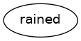
1.4 Ip (section 4.3.2)
- (1.28)
-
Nasha[NPR] looked[VBD;~Ip] back[RP] .[PUNC]
- (1.29)
-

- (1.30)
-
- (1.31)
-
the[D] place[N] where[RADV] you[PRO] are[BEP;~cat_Vg] standing[VAG;~Ip]
- (1.32)
-

- (1.33)
-

1.5 Ipr (section 4.3.3)
- (1.34)
-
They[PRO] went[VBD;~Ipr] to[P-ROLE] bed[N] .[PUNC]
- (1.35)
-

- (1.36)
-

- (1.37)
-
a[D] place[N] that[C] they[PRO] all[ADV] went[VBD;~Ipr] to[P-ROLE]
- (1.38)
-

- (1.39)
-

- (1.40)
-
leaks[NS] through[P-ROLE] which[RPRO] the[D] precious[ADJ] air[N] was[BED;~cat_Vg] rushing[VAG;~Ipr]
- (1.41)
-

- (1.42)
-

- (1.43)
-
These[D;_nphd_] are[BEP;~cat_Ve_passive_] looked[VVN;~Ipr] after[P-ROLE] .[PUNC]
- (1.44)
-

- (1.45)
-
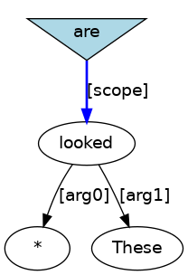
1.6 In/pr (section 4.3.4)
- (1.46)
-
We[PRO] stayed[VBD;~In/pr] a[D] fortnight[N] .[PUNC]
- (1.47)
-

- (1.48)
-

- (1.49)
-
We[PRO] stayed[VBD;~In/pr] for[P-ROLE] a[D] fortnight[N] .[PUNC]
- (1.50)
-

- (1.51)
-

1.7 It (section 4.3.5)
- (1.52)
-
They[PRO] came[VBD;~It] to[TO] conquer[VB;~I] .[PUNC]
- (1.53)
-

- (1.54)
-
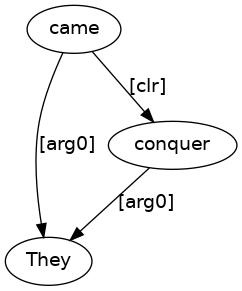
- (1.55)
-
We[PRO] waited[VBD;~It] for[P-CONN] it[PRO;_expletive_] to[TO] rain[VB;~I] .[PUNC]
- (1.56)
-

- (1.57)
-

1.8 Tn (section 4.4.1)
- (1.58)
-
The[D] teacher[N] scolded[VBD;~Tn] John[NPR] .[PUNC]
- (1.59)
-

- (1.60)
-
- (1.61)
-
a[D] student[N] who[RPRO] the[D] teacher[N] scolded[VBD;~Tn]
- (1.62)
-

- (1.63)
-

- (1.64)
-
John[NPR] was[BED;~cat_Ve_passive_] scolded[VVN;~Tn] .[PUNC]
- (1.65)
-

- (1.66)
-

- (1.67)
-
John[NPR] was[BED;~cat_Ve_passive_] scolded[VVN;~Tn] by[P-ROLE;_lgs_] the[D] teacher[N] .[PUNC]
- (1.68)
-

- (1.69)
-

1.9 Tn.p (section 4.4.2)
- (1.70)
-
Susan[NPR] turned[VBD;~Tn.p] the[D] gas[N] on[RP] .[PUNC]
- (1.71)
-

- (1.72)
-
- (1.73)
-
I[PRO] sucked[VBD;~Tn.p] in[RP] my[PRO;_genm_] breath[N] .[PUNC]
- (1.74)
-

- (1.75)
-

- (1.76)
-
more[ADJR] stuff[N] to[TO] put[VB;~Tn.p] in[RP]
- (1.77)
-

- (1.78)
-
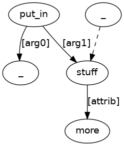
- (1.79)
-
I[PRO] wonder[VBP;~Tw] where[WADV] she[PRO] <apos>s[HVP;~cat_Ve] hidden[VVN;~Tn.p] the[D] treasure[N] .[PUNC]
- (1.80)
-

- (1.81)
-
- (1.82)
-
I[PRO] wonder[VBP;~Tw] how[WADV] she[PRO] acquired[VBD;~Tn] and[CONJ] where[WADV] she[PRO] <apos>s[HVP;~cat_Ve] hidden[VVN;~Tn.p] ,[PUNC] the[D] treasure[N] .[PUNC]
- (1.83)
-

- (1.84)
-

- (1.85)
-
The[D] straw[N] was[BED;~cat_Ve_passive_] peeled[VVN;~Tn.p] off[RP] .[PUNC]
- (1.86)
-

- (1.87)
-
- (1.88)
-
I[PRO] wonder[VBP;~Tw] where[WADV] the[D] treasure[N] was[BED;~cat_Ve_passive_] hidden[VVN;~Tn.p] .[PUNC]
- (1.89)
-

- (1.90)
-

1.10 Tn.pr (section 4.4.3)
- (1.91)
-
It[PRO] filled[VBD;~Tn.pr] me[PRO] with[P-ROLE] fear[N] .[PUNC]
- (1.92)
-

- (1.93)
-

- (1.94)
-
taskW[NPR] runs[VBP;~Tn.pr] in[P-ROLE] a[D] taskwindow[N] an[D] executable[N] .[PUNC]
- (1.95)
-

- (1.96)
-
- (1.97)
-
I[PRO] leave[VBP;~Tn.pr] it[PRO;_provisional_] to[P-ROLE] you[PRO] to[TO] decide[VB;~I] .[PUNC]
- (1.98)
-

- (1.99)
-

- (1.100)
-
the[D] people[NS] who[RPRO] I[PRO] take[VBP;~Tn.pr] items[N] over_to[P-ROLE]
- (1.101)
-

- (1.102)
-

- (1.103)
-
the[D] people[NS] over_to[P-ROLE] who[RPRO] I[PRO] take[VBP;~Tn.pr] items[N]
- (1.104)
-

- (1.105)
-

- (1.106)
-
items[NS] which[RPRO] I[PRO] take[VBP;~Tn.pr] over_to[P-ROLE] my[PRO;_genm_] mother[N]
- (1.107)
-

- (1.108)
-
- (1.109)
-
Two[N] certificates[NS] are[BEP;~cat_Ve_passive_] pinned[VVN;~Tn.pr] on[P-ROLE] the[D] wall[N] .[PUNC]
- (1.110)
-

- (1.111)
-

- (1.112)
-
the[D] diet[N] he[PRO] was[BED;~cat_Ve_passive_] put[VVN;~Tn.pr] on[P-ROLE]
- (1.113)
-

- (1.114)
-
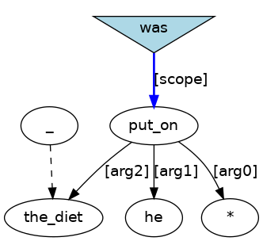
- (1.115)
-
the[D] diet[N] on[P-ROLE] which[RPRO] he[PRO] was[BED;~cat_Ve_passive_] put[VVN;~Tn.pr]
- (1.116)
-

- (1.117)
-

- (1.118)
-
He[PRO] was[BED;~cat_Ve_passive_] put[VVN;~Tn.pr] by[P-ROLE;_lgs_] the[D] doctor[N] on[P-ROLE] a[D] diet[N] .[PUNC]
- (1.119)
-

- (1.120)
-

1.11 Tf (section 4.4.4)
- (1.121)
-
What[WPRO] do[DOP] you[PRO] suppose[VB;~Tf] an[D] exploring[N] party[N] would[MD;~cat_Vi] find[VB;~Tn] ?[PUNC]
- (1.122)
-

- (1.123)
-
1.12 Tw (section 4.4.5)
- (1.124)
-
A[D] parse[N] tells[VBP;~Tw] how[WADV] information[N] flows[VBP;~Ipr] through[P-ROLE] structure[N] .[PUNC]
- (1.125)
-

- (1.126)
-
- (1.127)
-
I[PRO] do[DOP] n<apos>t[NEG;_clitic_] know[VB;~Tw] what[WPRO] to[TO] do[DO;~Tn] .[PUNC]
- (1.128)
-

- (1.129)
-

1.13 Tr (section 4.4.6)
- (1.130)
-
I[PRO] said[VBD;~Tr] <ldquo>[PULQ] I[PRO] <apos>m[BEP;~cat_Vg] going[VAG;~Ipr] to[P-ROLE] bed[N] .[PUNC] <rdquo>[PURQ] .[PUNC]
- (1.131)
-

- (1.132)
-

- (1.133)
-
<ldquo>[PULQ] A[D] paradox[N] .[PUNC] <rdquo>[PURQ] ,[PUNC] Nasha[NPR] said[VBD;~Tr] .[PUNC]
- (1.134)
-

- (1.135)
-
1.14 Tt (section 4.4.7)
- (1.136)
-
We[PRO] had[HVD;~cat_Ve] planned[VVN;~Tt] to[TO] meet[VB;~I] .[PUNC]
- (1.137)
-

- (1.138)
-
1.15 Tnt (section 4.4.8)
- (1.139)
-
They[PRO] allowed[VBD;~Tnt] no[Q] building[N] to[TO] be[BE;~cat_Ve_passive_] erected[VVN;~Tn] .[PUNC]
- (1.140)
-

- (1.141)
-
- (1.142)
-
John[NPR] needed[VBD;~Tnt] it[PRO;_expletive_] to[TO] rain[VB;~I] .[PUNC]
- (1.143)
-

- (1.144)
-
- (1.145)
-
something[D;_nphd_] which[RPRO] he[PRO] believes[VBP;~Tnt] to[TO] be[BE;~La] correct[ADJ]
- (1.146)
-

- (1.147)
-

- (1.148)
-
No[Q] building[N] was[BED;~cat_Ve_passive_] allowed[VVN;~Tnt] to[TO] be[BE;~cat_Ve_passive_] erected[VVN;~Tn] .[PUNC]
- (1.149)
-

- (1.150)
-
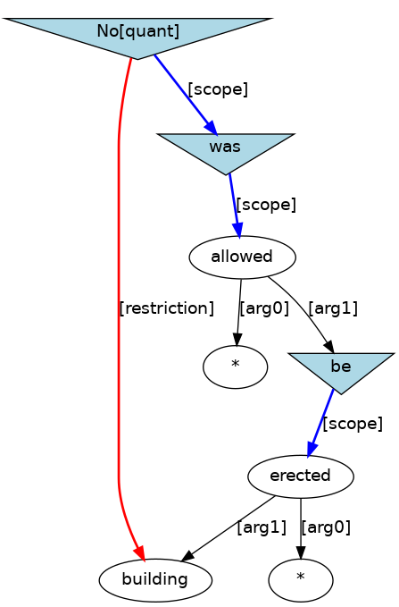
- (1.151)
-
This[D] place[N] is[BEP;~cat_Ve_passive_] believed[VVN;~Tnt] by[P-ROLE;_lgs_] the[D] pirates[NS] to[TO] be[BE;~La] safe[ADJ] .[PUNC]
- (1.152)
-

- (1.153)
-

- (1.154)
-
Kim[NPR] expected[VBD;~Tnt] it[PRO;_provisional_] to[TO] be[BE;~La] easy[ADJ] to[TO] impress[VB;~Tn] Sandy[NPR] .[PUNC]
- (1.155)
-

- (1.156)
-
- (1.157)
-
Some[D] geologists[NS] believe[VBP;~Tnt] there[EX] to[TO] be[BE;~ex_Vpr] oil[N] in[P-ROLE] Brooklyn[NPR] .[PUNC]
- (1.158)
-

- (1.159)
-
- (1.160)
-
There[EX] is[BEP;~cat_Ve_passive_] believed[VVN;~Tnt] by[P-ROLE;_lgs_] some[D] geologists[NS] to[TO] be[BE;~ex_Vpr] oil[N] in[P-ROLE] Brooklyn[NPR] .[PUNC]
- (1.161)
-

- (1.162)
-

1.16 Tprt (section 4.4.9)
- (1.163)
-
We[PRO] depend[VBP;~Tprt] on[P-ROLE] you[PRO] to[TO] come[VB;~I] .[PUNC]
- (1.164)
-

- (1.165)
-

1.17 Tni (section 4.4.10)
- (1.166)
-
You[PRO] can[MD;~cat_Vi] see[VB;~Tni] the[D] blood[N] run[VB;~Ipr] from[P-ROLE] their[PRO;_genm_] face[N] .[PUNC]
- (1.167)
-

- (1.168)
-

- (1.169)
-
There[EX] is[BEP;~ex_V] someone[D;_nphd_] whom[RPRO] Helen[NPR] saw[VBD;~Tni] answer[VB;~Tn] the[D] phone[N] .[PUNC]
- (1.170)
-

- (1.171)
-

1.18 Tg (section 4.4.11)
- (1.172)
-
Stop[VB;~Tg] shouting[VAG;~I] .[PUNC]
- (1.173)
-

- (1.174)
-

1.19 Tng (section 4.4.12)
- (1.175)
-
She[PRO] could[MD;~cat_Vi] feel[VB;~Tng] it[PRO;_expletive_] raining[VAG;~I] .[PUNC]
- (1.176)
-

- (1.177)
-

- (1.178)
-
There[EX] is[BEP;~ex_V] someone[D;_nphd_] whom[RPRO] Helen[NPR] saw[VBD;~Tng] hoeing[VAG;~Tn] onions[NS] .[PUNC]
- (1.179)
-

- (1.180)
-

- (1.181)
-
The[D] raiders[NS] can[MD;~cat_Vi] be[BE;~cat_Ve_passive_] seen[VVN;~Tng] hovering[VAG;~Ipr] around[P-ROLE] the[D] surface[N] .[PUNC]
- (1.182)
-

- (1.183)
-

1.20 Tsg (section 4.4.13)
- (1.184)
-
Do[DOP] n<apos>t[NEG;_clitic_] you[PRO] remember[VB;~Tsg] my[PRO;_genm_] telling[VAG;~Dn.*] you[PRO] ?[PUNC]
- (1.185)
-

- (1.186)
-
- (1.187)
-
Do[DOP] n<apos>t[NEG;_clitic_] you[PRO] remember[VB;~Tsg] me[PRO] telling[VAG;~Dn.*] you[PRO] ?[PUNC]
- (1.188)
-

- (1.189)
-

1.21 Dn.n (section 4.5.1)
- (1.190)
-
He[PRO] gave[VBD;~Dn.n] it[PRO] her[PRO] .[PUNC]
- (1.191)
-

- (1.192)
-

- (1.193)
-
Daddy[N] bought[VBD;~Dn.n] me[PRO] a[D] new[ADJ] bike[N] .[PUNC]
- (1.194)
-

- (1.195)
-

- (1.196)
-
the[D] task[N] he;<PERSON>[PRO] set[VBD;~Dn.n] himself;<PERSON>[PNX]
- (1.197)
-

- (1.198)
-

- (1.199)
-
We[PRO] were[BED;~cat_Ve_passive_] played[VVN;~Dn.n] two[N] recordings[NS] .[PUNC]
- (1.200)
-

- (1.201)
-

- (1.202)
-
everything[Q;_nphd_] everyone[Q;_nphd_] has[HVP;~cat_Ve] been[BEN;~cat_Ve_passive_] taught[VVN;~Dn.n]
- (1.203)
-

- (1.204)
-
1.22 Dn.f (section 4.5.2)
- (1.205)
-
That[D;_nphd_] is[BEP;~equ_Vw] what[WPRO] the[D] advice[N] tells[VBP;~Dn.f] us[PRO] we[PRO] must[MD;~cat_Vi] do[DO;~Tn] .[PUNC]
- (1.206)
-

- (1.207)
-

- (1.208)
-
We[PRO] got[VBD;~cat_Ve_passive_] told[VVN;~Dn.f] that[C] the[D] laser[N] can[MD;~cat_Vi] cut[VB;~Ipr] through[P-ROLE] concrete[N] .[PUNC]
- (1.209)
-

- (1.210)
-

1.23 Dn.w (section 4.5.3)
- (1.211)
-
My[PRO;_genm_] uncle[N] showed[VBD;~Dn.w] me[PRO] how[WADV] to[TO] milk[VB;~Tn] the[D] cows[NS] .[PUNC]
- (1.212)
-

- (1.213)
-
- (1.214)
-
We[PRO] were[BED;~cat_Ve_passive_] asked[VVN;~Dn.w] if[WQ] we[PRO] believed[VBD;~Tn] the[D] report[N] .[PUNC]
- (1.215)
-

- (1.216)
-

1.24 Dn.r (section 4.5.4)
- (1.217)
-
She[PRO] asked[VBD;~Dn.r] the[D] Prime[NPR] Minister[NPR] <ldquo>[PULQ] Is[BEP;~La] it[PRO] true[ADJ] ?[PUNC] <rdquo>[PURQ] .[PUNC]
- (1.218)
-

- (1.219)
-

- (1.220)
-
The[D] Prime[NPR] Minister[NPR] was[BED;~cat_Ve_passive_] asked[VVN;~Dn.r] <ldquo>[PULQ] Is[BEP;~La] it[PRO] true[ADJ] ?[PUNC] <rdquo>[PURQ] .[PUNC]
- (1.221)
-

- (1.222)
-

1.25 Dn.t (section 4.5.5)
- (1.223)
-
I[PRO] asked[VBD;~Dn.t] Andrew[NPR] to[TO] have[HV;~Tn] a[D] go[N] .[PUNC]
- (1.224)
-

- (1.225)
-

- (1.226)
-
I[PRO] have[HVP;~cat_Ve] been[BEN;~cat_Ve_passive_] forbidden[VVN;~Dn.t] to[TO] make[VB;~Tn] anything[D;_nphd_] .[PUNC]
- (1.227)
-

- (1.228)
-

1.26 Dn.* (section 4.5.6)
- (1.229)
-
I[PRO] did[DOD] tell[VB;~Dn.*] you[PRO] .[PUNC]
- (1.230)
-

- (1.231)
-
1.27 Dn.pr (section 4.5.7)
- (1.232)
-
Daddy[N] bought[VBD;~Dn.pr] a[D] new[ADJ] bike[N] for[P-ROLE] me[PRO] .[PUNC]
- (1.233)
-

- (1.234)
-

- (1.235)
-
I[PRO] want[VBP;~Tt] to[TO] say[VB;~Dn.pr] to[P-ROLE] you[PRO] something[D;_nphd_] .[PUNC]
- (1.236)
-

- (1.237)
-
- (1.238)
-
the[D] maximum[ADJ] loan[N] that[C] the[D] state[N] could[MD;~cat_Vi] make[VB;~Dn.pr] to[P-ROLE] a[D] project[N]
- (1.239)
-

- (1.240)
-

- (1.241)
-
developers[NS] to[P-ROLE] who[RPRO] a[D] company[N] gives[VBP;~Dn.pr] advice[N]
- (1.242)
-

- (1.243)
-

- (1.244)
-
developers[NS] that[C] a[D] company[N] gives[VBP;~Dn.pr] advice[N] to[P-ROLE]
- (1.245)
-

- (1.246)
-

- (1.247)
-
Details[NS] of[P-ROLE] all[Q] negotiations[NS] are[BEP;~cat_Ve_passive_] sent[VVN;~Dn.pr] to[P-ROLE] Head[N] Office[N] .[PUNC]
- (1.248)
-

- (1.249)
-
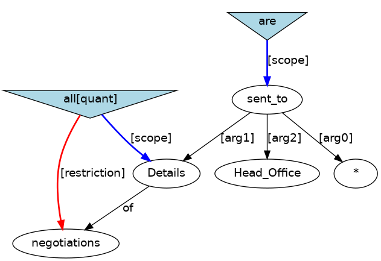
- (1.250)
-
developers[NS] to[P-ROLE] who[RPRO] advice[N] was[BED;~cat_Ve_passive_] given[VVN;~Dn.pr]
- (1.251)
-

- (1.252)
-

- (1.253)
-
developers[NS] advice[N] was[BED;~cat_Ve_passive_] given[VVN;~Dn.pr] to[P-ROLE]
- (1.254)
-

- (1.255)
-

1.28 Dpr.f (section 4.5.8)
- (1.256)
-
We[PRO] did[DOD] n<apos>t[NEG;_clitic_] say[VB;~Dpr.f] to[P-ROLE] the[D] man[N] that[C] we[PRO] were[BED;~La] sorry[ADJ] .[PUNC]
- (1.257)
-

- (1.258)
-
1.29 Dpr.r (section 4.5.9)
- (1.259)
-
She[PRO] said[VBD;~Dpr.r] to[P-ROLE] me[PRO] <ldquo>[PULQ] Get[VB;~Ip] up[RP] ![PUNC] <rdquo>[PURQ] .[PUNC]
- (1.260)
-

- (1.261)
-

1.30 Cn.a (section 4.6.1)
- (1.262)
-
The[D] setting[ADJ] sun[N] painted[VBD;~Cn.a] the[D] western[ADJ] sky[N] red[ADJ] .[PUNC]
- (1.263)
-

- (1.264)
-

- (1.265)
-
He[PRO] flung[VBD;~Cn.a] open[ADJ] the[D] canopy[N] .[PUNC]
- (1.266)
-

- (1.267)
-
- (1.268)
-
her[PRO;_genm_] habits[NS] that[C] most[Q;_nphd_] would[MD;~cat_Vi] find[VB;~Cn.a] annoying[ADJ]
- (1.269)
-

- (1.270)
-
- (1.271)
-
A[D] map[N] makes[VBP;~Cn.a] it[PRO;_provisional_] easier[ADJR] to[TO] find[VB;~Tn] your[PRO;_genm_] way[N] .[PUNC]
- (1.272)
-

- (1.273)
-
- (1.274)
-
A[D] map[N] makes[VBP;~Cn.a] your[PRO;_genm_] way[N] easier[ADJR] to[TO] find[VB;~Tn] .[PUNC]
- (1.275)
-

- (1.276)
-
- (1.277)
-
What[WPRO] did[DOD] you[PRO] find[VB;~Cn.a] difficult[ADJ] to[TO] believe[VB;~Tn] ?[PUNC]
- (1.278)
-

- (1.279)
-

- (1.280)
-
The[D] western[ADJ] sky[N] was[BED;~cat_Ve_passive_] painted[VVN;~Cn.a] red[ADJ] .[PUNC]
- (1.281)
-

- (1.282)
-

- (1.283)
-
This[D;_nphd_] was[BED;~cat_Ve_passive_] found[VVN;~Cn.a] difficult[ADJ] to[TO] believe[VB;~Tn] .[PUNC]
- (1.284)
-

- (1.285)
-

1.31 Cn.n (section 4.6.2)
- (1.286)
-
I[PRO] have[HVP;~cat_Ve] made[VVN;~Cn.n] it[PRO] mine[PRO;_ppge_] .[PUNC]
- (1.287)
-

- (1.288)
-

- (1.289)
-
Make[VB;~Cn.n] it[PRO;_provisional_] a[D] rule[N] to[TO] get[VB;~Ip] up[RP] .[PUNC]
- (1.290)
-

- (1.291)
-

- (1.292)
-
a[D] kitten[N] who[RPRO] we[PRO] called[VBD;~Cn.n] Ruffels[NPR]
- (1.293)
-

- (1.294)
-

- (1.295)
-
The[D] kitten[N] was[BED;~cat_Ve_passive_] called[VVN;~Cn.n] Ruffels[NPR] .[PUNC]
- (1.296)
-

- (1.297)
-

- (1.298)
-
What[WPRO] was[BED;~cat_Ve_passive_] the[D] city[N] called[VVN;~Cn.n] ?[PUNC]
- (1.299)
-

- (1.300)
-
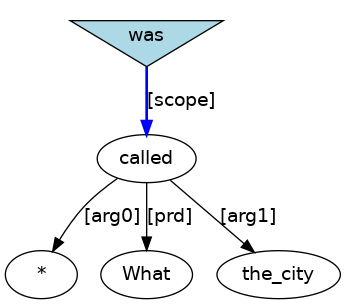
1.32 Cn.n/a (section 4.6.3)
- (1.301)
-
They[PRO] accepted[VBD;~Cn.n/a] it[PRO] as[P-ROLE] a[D] natural[ADJ] thing[N] .[PUNC]
- (1.302)
-

- (1.303)
-
- (1.304)
-
Solicitors[NS] regarded[VBD;~Cn.n/a] the[D] rates[NS] of[P-ROLE] remuneration[N] as[P-ROLE] low[ADJ] .[PUNC]
- (1.305)
-

- (1.306)
-
- (1.307)
-
The[D] alliance[N] became[VBD;~cat_Ve_passive_] known[VVN;~Cn.n/a] as[P-ROLE] the[D] Delian[NPR] League[NPR] .[PUNC]
- (1.308)
-

- (1.309)
-
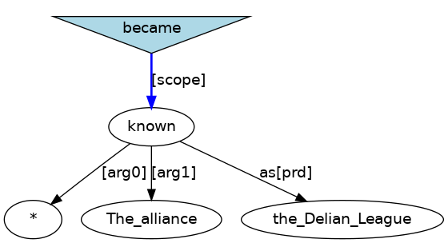
- (1.310)
-
The[D] rates[NS] of[P-ROLE] remuneration[N] are[BEP;~cat_Ve_passive_] regarded[VVN;~Cn.n/a] by[P-ROLE;_lgs_] solicitors[NS] as[P-ROLE] low[ADJ] .[PUNC]
- (1.311)
-

- (1.312)
-

1.33 Cn.pr (section 4.6.4)
- (1.313)
-
Geoffrey;<GEOFFREY>[NPR] could[MD;~cat_Vi] imagine[VB;~Cn.pr] himself;<GEOFFREY>[PNX] in[P-ROLE] an[D] upper[ADJ] gallery[N] .[PUNC]
- (1.314)
-

- (1.315)
-

- (1.316)
-
Thorn[NPR] is[BEP;~cat_Ve_passive_] involved[VVN;~Cn.pr] in[P-ROLE] parallel[ADJ] computing[N] .[PUNC]
- (1.317)
-

- (1.318)
-

1.34 Cn.t (section 4.6.5)
- (1.319)
-
I[PRO] persuaded[VBD;~Cn.t] it[PRO] to[TO] get[VB;~Ipr] off[P-ROLE] me[PRO] .[PUNC]
- (1.320)
-

- (1.321)
-

- (1.322)
-
the[D] person[N] that[C] I[PRO] <apos>ll[MD;~cat_Vi] get[VB;~Cn.t] to[TO] do[DO;~Tn] my[PRO;_genm_] dirty[ADJ] work[N]
- (1.323)
-

- (1.324)
-

- (1.325)
-
Such[ADJ] receptors[NS] are[BEP;~cat_Ve_passive_] thought[VVN;~Cn.t] to[TO] be[BE;~Ln] neurons[NS] .[PUNC]
- (1.326)
-

- (1.327)
-

1.35 Cn.i (section 4.6.6)
- (1.328)
-
Let[VB;~Cn.i] me[PRO] have[HV;~Tn] a[D] go[N] .[PUNC]
- (1.329)
-

- (1.330)
-
1.36 Cn.g (section 4.6.7)
- (1.331)
-
So[ADV] they[PRO] <apos>d[HVD;~cat_Ve] got[VVN;~Cn.g] a[D] ticking[ADJ] clock[N] running[VAG;~I] .[PUNC]
- (1.332)
-

- (1.333)
-
- (1.334)
-
The[D] unit[N] was[BED;~cat_Ve_passive_] assumed[VVN;~Cn.g] working[VAG;~I] .[PUNC]
- (1.335)
-

- (1.336)
-
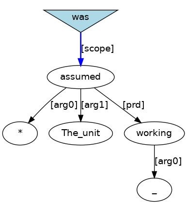
1.37 VP24A (section 4.7.1)
- (1.337)
-
I[PRO] made[VBD;~VP24A] him[PRO] obliged[VVN;~Tn.pr] to[P-ROLE] me[PRO] .[PUNC]
- (1.338)
-

- (1.339)
-
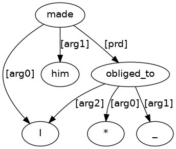
- (1.340)
-
A[D] prominent[ADJ] journalist[N] was[BED;~cat_Ve_passive_] found[VVN;~VP24A] shot[VVN;~Cn.a] dead[ADJ] .[PUNC]
- (1.341)
-

- (1.342)
-
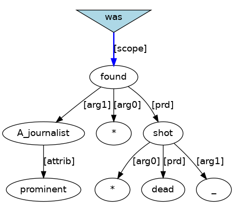
1.38 VP24B (section 4.7.2)
- (1.343)
-
I[PRO] <apos>d[HVD;~cat_Ve] had[HVN;~VP24B] a[D] novel[N] published[VVN;~Tn] .[PUNC]
- (1.344)
-

- (1.345)
-

1.39 VP24C (section 4.7.3)
- (1.346)
-
I[PRO] <apos>ve[HVP;~cat_Ve] got[VVN;~VP24C] my[PRO;_genm_] hair[N] cut[VVN;~Tn] .[PUNC]
- (1.347)
-

- (1.348)
-

1.40 ex_V (section 4.8.1)
- (1.349)
-
There[EX] are[BEP;~ex_V] other[ADJ] complications[NS] .[PUNC]
- (1.350)
-

- (1.351)
-

- (1.352)
-
How[WADV] many[ADJ] flats[NS] are[BEP;~ex_V] there[EX] ?[PUNC]
- (1.353)
-

- (1.354)
-

1.41 ex_Vp (section 4.8.2)
- (1.355)
-
There[EX] <apos>s[BEP;~ex_Vp] nothing[Q;_nphd_] there[RP] .[PUNC]
- (1.356)
-

- (1.357)
-

- (1.358)
-
How[WADV] many[ADJ] flats[NS] are[BEP;~ex_Vp] there[EX] here[RP] ?[PUNC]
- (1.359)
-

- (1.360)
-

1.42 ex_Vpr (section 4.8.3)
- (1.361)
-
There[EX] was[BED;~ex_Vpr] open[ADJ] mockery[N] in[P-ROLE] his[PRO;_genm_] tone[N] .[PUNC]
- (1.362)
-

- (1.363)
-
1.43 ex_cat_Vt (section 4.8.4)
- (1.364)
-
There[EX] is[BEP;~ex_cat_Vt] no[Q] evidence[N] to[TO] prove[VB;~Tf] Hollis[NPR] was[BED;~Ln] a[D] Russian[ADJ] mole[N] .[PUNC]
- (1.365)
-

- (1.366)
-

1.44 ex_cat_Vt_passive_ (section 4.8.5)
- (1.367)
-
What[WPRO] is[BEP;~ex_cat_Vt_passive_] there[EX] for[P-CONN] her[PRO] to[TO] do[DO;~Tn] ?[PUNC]
- (1.368)
-

- (1.369)
-

1.45 ex_cat_Vg (section 4.8.6)
- (1.370)
-
There[EX] <apos>s[BEP;~ex_cat_Vg] a[D] bear[N] sitting[VAG;~Ipr] in[P-ROLE] the[D] corner[N] .[PUNC]
- (1.371)
-

- (1.372)
-
1.46 ex_cat_Ve_passive_ (section 4.8.7)
- (1.373)
-
There[EX] <apos>s[BEP;~ex_cat_Ve_passive_] something[D;_nphd_] inscribed[VVN;~Tn.pr] on[P-ROLE] this[D;_nphd_] .[PUNC]
- (1.374)
-

- (1.375)
-
1.47 equ_Vf (section 4.9.1)
- (1.376)
-
My[PRO;_genm_] excuse[N] was[BED;~equ_Vf] that[C] I[PRO] had[HVD;~Tn] lessons[NS] .[PUNC]
- (1.377)
-

- (1.378)
-
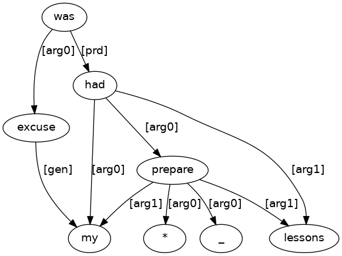
1.48 equ_Vw (section 4.9.2)
- (1.379)
-
That[D;_nphd_] is[BEP;~equ_Vw] how[WADV] I[PRO] learnt[VBD;~Tt] to[TO] ride[VB;~I] .[PUNC]
- (1.380)
-

- (1.381)
-
- (1.382)
-
Is[BEP;~equ_Vw] that[D;_nphd_] what[WPRO] to[TO] say[VB;~Tn.pr] to[P-ROLE] people[N] ?[PUNC]
- (1.383)
-

- (1.384)
-

1.49 equ_Vt (section 4.9.3)
- (1.385)
-
This[D;_nphd_] is[BEP;~equ_Vt] to[TO] give[VB;~Dn.n] the[D] application[N] an[D] iconbar[N] menu[N] .[PUNC]
- (1.386)
-

- (1.387)
-

1.50 equ_Vg (section 4.9.4)
- (1.388)
-
One[D;_nphd_] of[P-ROLE] my[PRO;_genm_] funny[ADJ] stories[NS] is[BEP;~equ_Vg] trying[VAG;~cat_Vt] to[TO] debug[VB;~Tn] the[D] interface[N] .[PUNC]
- (1.389)
-

- (1.390)
-

- (1.391)
-
The[D] first[ADJ] thing[N] he[PRO] saw[VBD;~Tn] was[BED;~equ_Vg] Mr.[N] McGregor[NPR] hoeing[VAG;~Tn] onions[NS] .[PUNC]
- (1.392)
-

- (1.393)
-

1.51 cat_Vt (section 4.10.1)
- (1.394)
-
I[PRO] had[HVD;~cat_Vt] to[TO] go[VB;~Ipr] to[P-ROLE] Leeds[NPR] .[PUNC]
- (1.395)
-

- (1.396)
-
1.52 cat_Vt_passive_ (section 4.10.2)
- (1.397)
-
The[D] government[N] is[BEP;~cat_Vt_passive_] to[TO] blame[VB;~Tn] .[PUNC]
- (1.398)
-

- (1.399)
-

- (1.400)
-
One[D;_nphd_] is[BEP;~cat_Vt_passive_] for[P-CONN] them[PRO] to[TO] sign[VB;~Tn] and[CONJ] send[VB;~Tn.p] back[RP] .[PUNC]
- (1.401)
-

- (1.402)
-

1.53 cat_Vi (section 4.10.3)
- (1.403)
-
It[PRO] helped[VBD;~cat_Vi] cut[VB;~Tn] the[D] cost[N] .[PUNC]
- (1.404)
-

- (1.405)
-
1.54 cat_Vg (section 4.10.4)
- (1.406)
-
They[PRO] stopped[VBD;~cat_Vg] walking[VAG;~I] .[PUNC]
- (1.407)
-

- (1.408)
-

1.55 cat_Vg_passive_ (section 4.10.5)
- (1.409)
-
His[PRO;_genm_] wounds[NS] need[VBP;~cat_Vg_passive_] dressing[VAG;~Tn] .[PUNC]
- (1.410)
-

- (1.411)
-

1.56 cat_Ve (section 4.10.6)
- (1.412)
-
His[PRO;_genm_] expression[N] had[HVD;~cat_Ve] changed[VVN;~I] .[PUNC]
- (1.413)
-

- (1.414)
-

1.57 cat_Ve_passive_ (section 4.10.7)
- (1.415)
-
His[PRO;_genm_] expression[N] was[BED;~cat_Ve_passive_] changed[VVN;~Tn] .[PUNC]
- (1.416)
-

- (1.417)
-